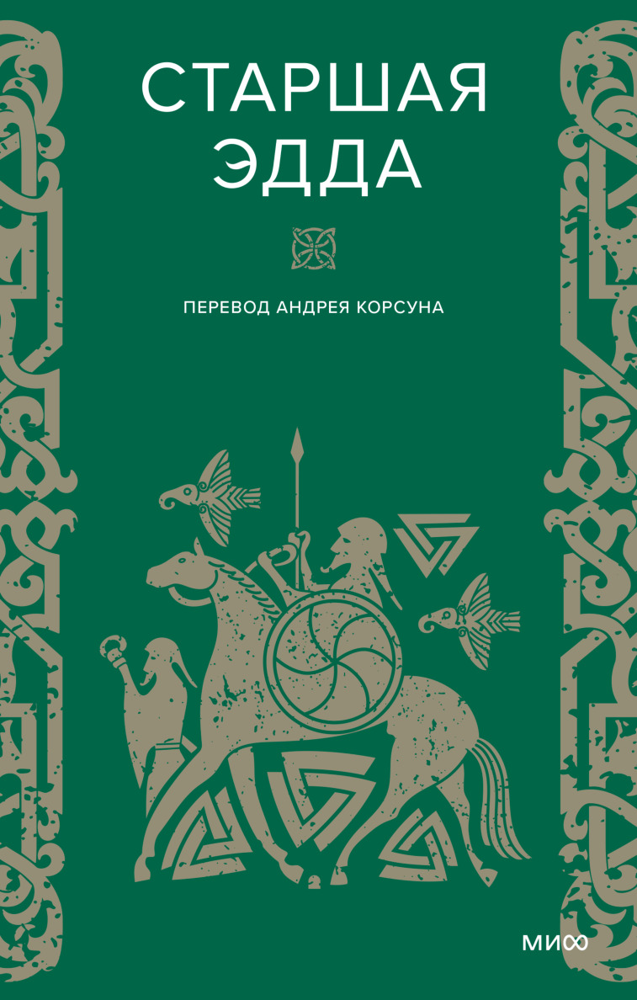
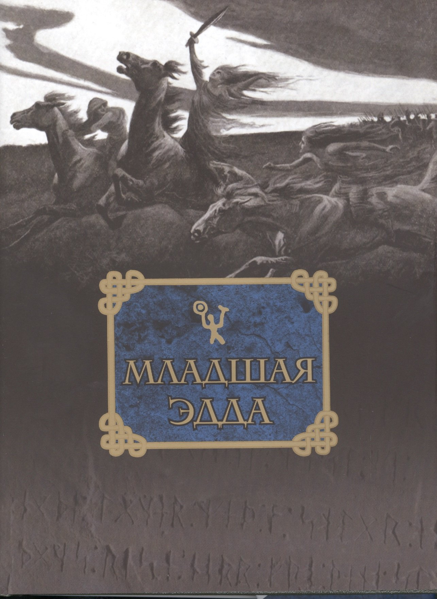
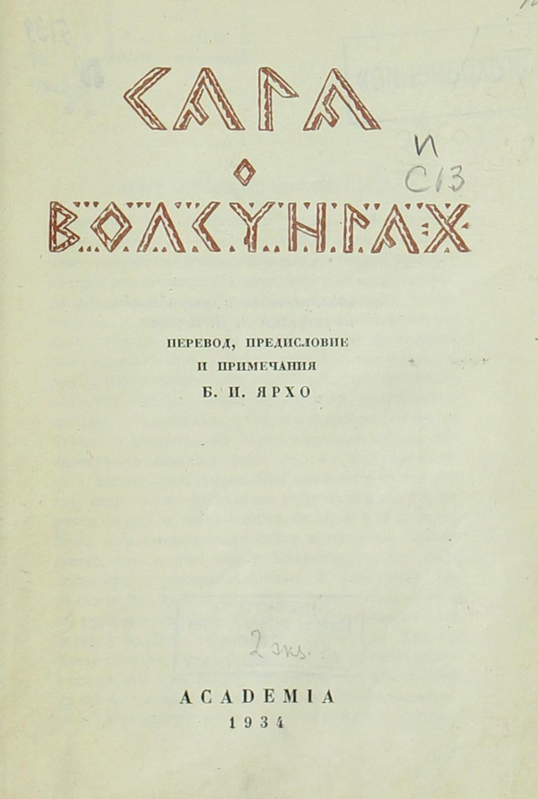
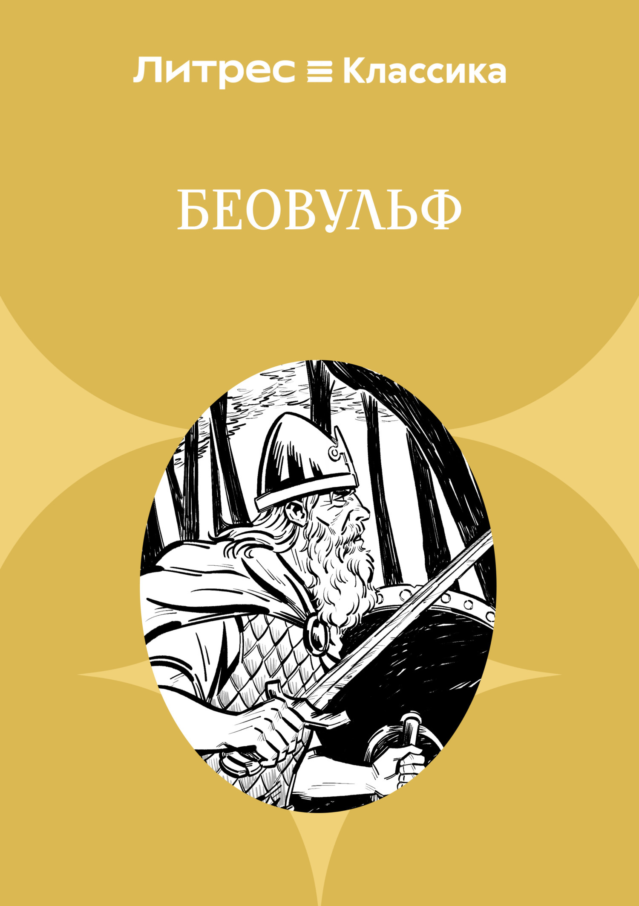

Литература: Эдды, саги и исследования
От древних рунических памятников до современных академических переводов.
Основные источники

Старшая Эдда
Автор: неизвестен (записана в XIII веке)
Содержание: Сборник древнеисландских песен о богах и героях. Главные песни: «Прорицание вёльвы» (создание мира и Рагнарёк), «Речи Высокого» (советы Одина), «Песнь о Трюме», «Речи Сигрдривы».
Издания: Переводы А. Корсуна, О. Смирницкой. М.: Наука, 1963, 2017.
Читать онлайн →
Младшая Эдда (Эдда Снорри)
Автор: Снорри Стурлусон (ок. 1220 г.)
Содержание: Учебник поэтического искусства скальдов. Содержит прозаический пересказ мифов («Видение Гюльви»), список поэтических синонимов (кеннингов) и правила стихосложения.
Издания: Перевод О. Смирницкой, М. Стеблин-Каменского.
Читать онлайн →
Сага о Вёльсунгах
Содержание: Героическая сага о роде Вёльсунгов, включая историю Сигурда, убийцы дракона Фафнира, и валькирии Брюнхильд. Легла в основу «Песни о Нибелунгах» и опер Вагнера.
Читать онлайн →
Беовульф
Автор: неизвестен (VIII–XI вв.)
Содержание: Англосаксонский эпос о герое Беовульфе, который сражается с чудовищем Гренделем и драконом. Действие происходит в Скандинавии (Дания, Гёталанд).
Научно-популярные издания
В. Петрухин «Мифы древней Скандинавии»
Лучший обзорный труд на русском языке. Охватывает все аспекты мифологии, религии и культуры.
Х. Р. Эллис Дэвидсон «Боги и мифы Севера»
Классика западной мифологии. Глубокий анализ источников и археологических данных.
М. Стеблин-Каменский «Культура Исландии», «Миф»
Работы крупнейшего отечественного скандинависта. Философский взгляд на скандинавское мировоззрение.
Н. Григорьева «Саги и эдды»
Сборники переводов и подробные комментарии к текстам.